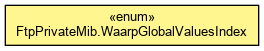

org.waarp.gateway.ftp.snmp
Enum FtpPrivateMib.WaarpGlobalValuesIndex
java.lang.Object
 java.lang.Enum<FtpPrivateMib.WaarpGlobalValuesIndex>
org.waarp.gateway.ftp.snmp.FtpPrivateMib.WaarpGlobalValuesIndex
java.lang.Enum<FtpPrivateMib.WaarpGlobalValuesIndex>
org.waarp.gateway.ftp.snmp.FtpPrivateMib.WaarpGlobalValuesIndex
- All Implemented Interfaces:
- Serializable, Comparable<FtpPrivateMib.WaarpGlobalValuesIndex>
- Enclosing class:
- FtpPrivateMib
public static enum FtpPrivateMib.WaarpGlobalValuesIndex
- extends Enum<FtpPrivateMib.WaarpGlobalValuesIndex>

Global part
- Author:
- Frederic Bregier
applUptime
public static final FtpPrivateMib.WaarpGlobalValuesIndex applUptime
applOperStatus
public static final FtpPrivateMib.WaarpGlobalValuesIndex applOperStatus
applLastChange
public static final FtpPrivateMib.WaarpGlobalValuesIndex applLastChange
applInboundAssociations
public static final FtpPrivateMib.WaarpGlobalValuesIndex applInboundAssociations
applOutboundAssociations
public static final FtpPrivateMib.WaarpGlobalValuesIndex applOutboundAssociations
applAccumInboundAssociations
public static final FtpPrivateMib.WaarpGlobalValuesIndex applAccumInboundAssociations
applAccumOutboundAssociations
public static final FtpPrivateMib.WaarpGlobalValuesIndex applAccumOutboundAssociations
applLastInboundActivity
public static final FtpPrivateMib.WaarpGlobalValuesIndex applLastInboundActivity
applLastOutboundActivity
public static final FtpPrivateMib.WaarpGlobalValuesIndex applLastOutboundActivity
applRejectedInboundAssociations
public static final FtpPrivateMib.WaarpGlobalValuesIndex applRejectedInboundAssociations
applFailedOutboundAssociations
public static final FtpPrivateMib.WaarpGlobalValuesIndex applFailedOutboundAssociations
applInboundBandwidthKBS
public static final FtpPrivateMib.WaarpGlobalValuesIndex applInboundBandwidthKBS
applOutboundBandwidthKBS
public static final FtpPrivateMib.WaarpGlobalValuesIndex applOutboundBandwidthKBS
nbInfoUnknown
public static final FtpPrivateMib.WaarpGlobalValuesIndex nbInfoUnknown
nbInfoNotUpdated
public static final FtpPrivateMib.WaarpGlobalValuesIndex nbInfoNotUpdated
nbInfoInterrupted
public static final FtpPrivateMib.WaarpGlobalValuesIndex nbInfoInterrupted
nbInfoToSubmit
public static final FtpPrivateMib.WaarpGlobalValuesIndex nbInfoToSubmit
nbInfoError
public static final FtpPrivateMib.WaarpGlobalValuesIndex nbInfoError
nbInfoRunning
public static final FtpPrivateMib.WaarpGlobalValuesIndex nbInfoRunning
nbInfoDone
public static final FtpPrivateMib.WaarpGlobalValuesIndex nbInfoDone
nbAllTransfer
public static final FtpPrivateMib.WaarpGlobalValuesIndex nbAllTransfer
memoryTotal
public static final FtpPrivateMib.WaarpGlobalValuesIndex memoryTotal
memoryFree
public static final FtpPrivateMib.WaarpGlobalValuesIndex memoryFree
memoryUsed
public static final FtpPrivateMib.WaarpGlobalValuesIndex memoryUsed
nbThreads
public static final FtpPrivateMib.WaarpGlobalValuesIndex nbThreads
nbNetworkConnection
public static final FtpPrivateMib.WaarpGlobalValuesIndex nbNetworkConnection
values
public static FtpPrivateMib.WaarpGlobalValuesIndex[] values()
- Returns an array containing the constants of this enum type, in
the order they are declared. This method may be used to iterate
over the constants as follows:
for (FtpPrivateMib.WaarpGlobalValuesIndex c : FtpPrivateMib.WaarpGlobalValuesIndex.values())
System.out.println(c);
- Returns:
- an array containing the constants of this enum type, in
the order they are declared
valueOf
public static FtpPrivateMib.WaarpGlobalValuesIndex valueOf(String name)
- Returns the enum constant of this type with the specified name.
The string must match exactly an identifier used to declare an
enum constant in this type. (Extraneous whitespace characters are
not permitted.)
- Parameters:
name - the name of the enum constant to be returned.
- Returns:
- the enum constant with the specified name
- Throws:
IllegalArgumentException - if this enum type has no constant
with the specified name
NullPointerException - if the argument is null
getOID
public int getOID()
Copyright © 2009-2013 Waarp. All Rights Reserved.